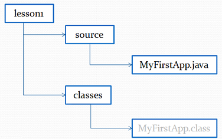
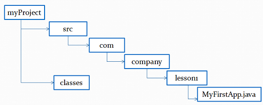

Компиляция программ
Для компиляции программ в командной строке используется команда javac. Это стандартный компилятор языка Java. Синтаксис команды javac следующий:
javac [ключи] [имена_исходных_файлов]
Получение списка возможных ключей компилятора:
javac –help
Чтобы скомпилировать программу MyApp, необходимо запустить компилятор, указав имя исходного файла в командной строке:
javac MyApp.java
Компилятор javac создаст файл MyApp.class. В нем будет находиться байт-код для Java-машины. В процессе компиляции исходного кода каждый отдельный класс помещается в собственный выходной файл, называемый по имени класса и получающий расширение .class.
Компиляция с опцией -d
Опция -d позволяет указать директорию назначения, куда будут складываться скомпилированные файлы классов. По умолчанию компилятор записывает сгенерированный .class в тот же каталог, где находится исходник класса .java. Это удобно для небольших проектов, но при работе на крупных проектах файлы .java и .class разумнее хранить отдельно.
Ключ -d позволяет указать компилятору, куда записывать сгенерированные .class файлы.
Пример 1. Компиляция с ключом -d
Например у нас есть такая структура папок:
Следующая команда, выполненная из lesson1 папки сгенерирует файл MyFirstApp.class и запишет его в папку classes (предполагаем, что MyFirstApp не содержит оператора package):
cd lesson1
javac -d classes source/MyFirstApp.java
Пример 2. Компиляция с ключом -d пакетных файлов
Теперь давайте рассмотрим пример компиляции класса com.company.lesson1.MyFirstApp, находящегося в пакете com.company.lesson1. Имеется такая структура каталогов:

Следующая команда, выполненная из src каталога, сгенерирует файл MyFirstApp.class, и запишет его в каталог classes/com/company/lesson1:
cd myProject/src
javac -d ../classes com/company/lesson1/MyFirstApp.java
Если каталог classes/com/company/lesson1 не существует, то он будет создан при компиляции.
Если же не существует каталог classes, то вы получите ошибку компиляции.